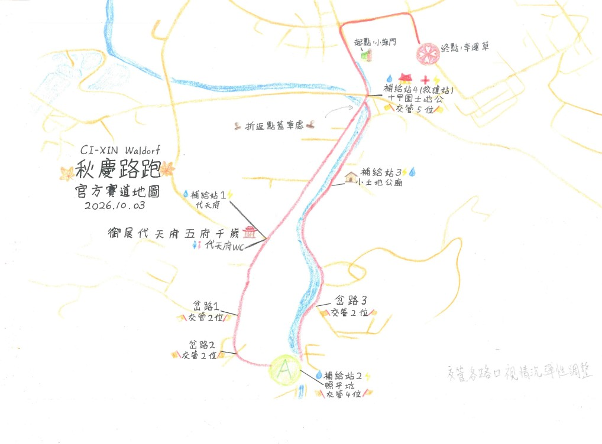
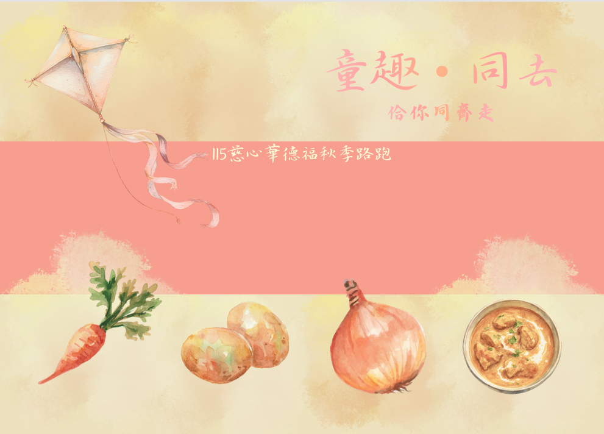
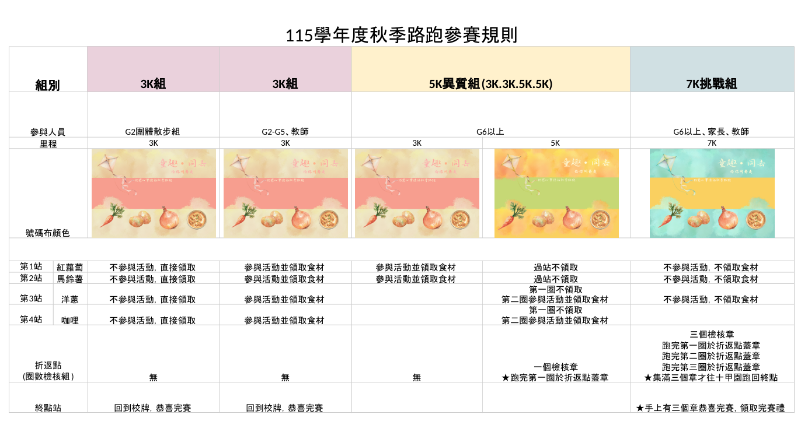

115 學年度 親師生秋季節慶
童趣同去路跑
家長須知
佮你同齊走
115 年 10 月 3 日（六）

| 時間 | 內容 |
|---|---|
| 08:00–08:10 | 各班集合、點名 |
| 08:10–08:15 | 集合晨詩，校長給予童趣的祝福 |
| 08:15–08:25 | 暖身操 |
| 08:25–08:30 | 各分組於小綠門預備就位 |
| 08:30 | 7K 組出發（6–12 年級、家長及教師） |
| 08:35 | 5K 異質組出發（6–9 年級及教師） |
| 08:45 | 3K 組出發（3–5 年級及教師） 3K 2 年級散步組出發 1 年級散步組出發（往潤泰鐵道） |
| 09:50–10:00 | 各班回班級集合 |
| 10:00–11:20 | 各班活動，由班級導師安排 |
| 11:20–12:30 | 班級煮食：一起煮咖哩飯 |
| 12:30–13:00 | 午餐 |
| 13:00–13:30 | 打掃、結束圈 |
家長可以怎麼參與：
・7K 挑戰組開放家長報名參加，與孩子一起完成路跑。報名連結：https://forms.gle/2wLAgkyndJH8qbhJ6
・路跑起點在小綠門，終點在慈心校門口，歡迎到現場加油。
・路跑當天請自備水杯，現場補給站僅提供少量的公用杯。
・7K 挑戰組開放家長報名參加，與孩子一起完成路跑。報名連結：https://forms.gle/2wLAgkyndJH8qbhJ6
・路跑起點在小綠門，終點在慈心校門口，歡迎到現場加油。
・路跑當天請自備水杯，現場補給站僅提供少量的公用杯。
路跑參賽規則
